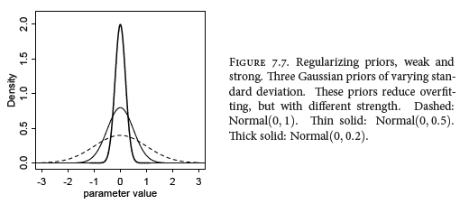
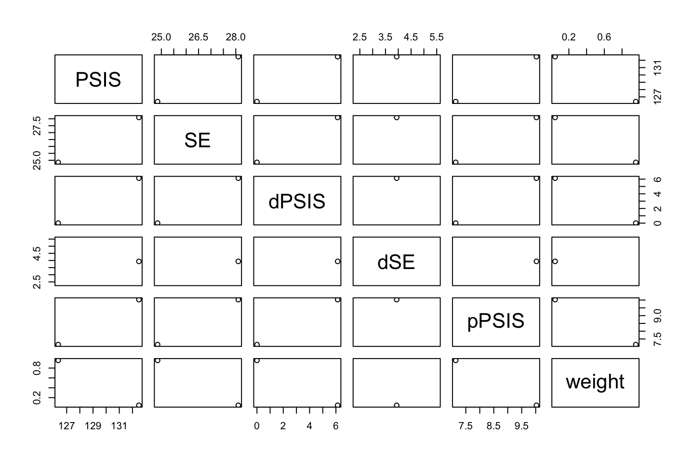
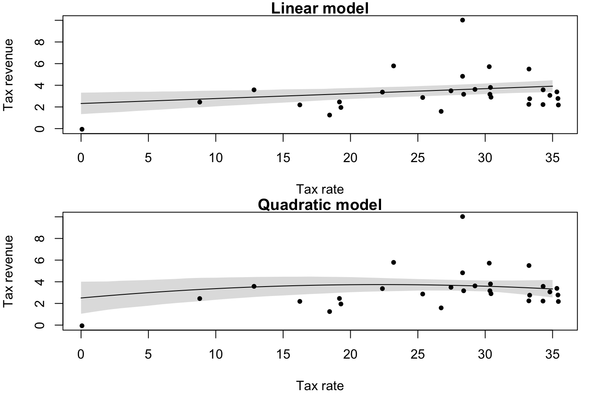

7 Chapter 7 - Ulysses’ Compass
7.1 The problem with parameters
The section elaborates on overfitting and underfitting.
It introduce \(R^2\) and some reasoning for AIC and WAIC. It starts elaborating on why \(R^2\) is useless.
p-values will never be an indicator for predictive accuracy!!, what p-value does is only care about type 1 error. In general, do not pay too much attention to these.
7.2 Entropy and Accuracy
We see that entropy is able to reflect how wrong we are, instead of just measuring hit rate as accuracy does.
When we calculate the entropy of a model, we will try to minize the entropy, that is because the large the entropy, the more surprised we are of the actual outcomes. The larger the entropy the larger is q (our model) to p (the actual outcome), the distance from our model to the true model is also called the Divergence. The equation:
\[Divergence= \sum_i p_i(log(p_i) - log(q_i))\]
Divergence example: Go to the eath / mars example in the book. In its essence, we see that earth is a HIGH entropy place, as there are a lot of land and a lot of water (hence there is lots of both). When you then go to mars, you will be surprised. But the surprise going from mars to earth will be greater, as there is low entropy on mars (as almost 100% of the planet is covered in land), hence you will be very surprised going to a place with higher entropy.
The simpler model is better than complicated models, that is because simpler model has higher entropy, as they generelize more than complicated models. Where we see complicated models can be compared with mars, where it is very certain about different outcomes (typical characteristics of overfitting)
To estimate divergence for a model, we will use the log-score, this will be a distribution, this can be foind with lppd() from the rethinking package (log-pointwise-predictive-density).
\[Deviance = logscore * -2.\]
We will look at following information criteria:
- AIC
- WAIC
- PSIS
We see that deviance has the same properties as R2, thus it will not penalize for introducing more variables and also overfitting.
Then we also see that CV can make out of sample performance estimations based on testing the model on unseen data.
Notice that nonsens models can have good predictions, but their inference and causal relationships may be totally off, hence prediction and inference is two totally different ways of approaching a problem.
Definition of PSIS: Recall that with leave one out CV, we estimate the model always leaving out one observation. With this technique we get a very good out of sample estimate. Although it it cumbersome. PSIS does something similar, with this we are also able to see the score for each observation PSISk(), thus if the score is high, we see that the model predictions are very different from what the observation may look like. This also implies that high PSIS values for observations indicates that the observation may have a large influence on the bayesian updating. We see an example in section H2, where students t distribution is used instead.
7.3 Golem Taming: Regularization
As we have seen in ML classes, we can regularize the model to make it harder to capture variance in the training / calibration process.
We regularize the priors, we see that we have a prior (striped) that can take on many values, while two versions of regularizations is more conservative, hence it needs more extreme data to overwhelm the priors.

7.4 Predicting predictive accuracy
We see that:
the
loofunction is a very accurate out of sample performance estimateAIC: Information criteria to approximate out of sample performance, we see that WAIC always (almost) outperforms the AIC is
WAIC: we see that lppd is the loglik that we have in the AIC.

One can use the compare() function to compare different modes, that will be done on the WAIC, and it will show the weight, hence if you have several models, it will say what weights different models should have in a prediction scenario.
pWAIC is the effective number of parameters in the model.
One must remember that the information criteria is an indication of the overfit, i.e., the model overconfidence. It should in fact never be used for model selection, as these criteria does not care about causality.
7.5 Model Comparison
7.6 Exercies
7.6.1 7M3
When comparing models with an information criterion, why must all models be fit to exactly the same observations? What would happen to the information criterion values, if the models were fit to different numbers of observations? Perform some experiments, if you are not sure.
Because the information is reflecting how surprised a model is when it sees some data.
7.6.2 7M4
What happens to the effective number of parameters, as measured by PSIS or WAIC, as a prior becomes more concentrated? Why? Perform some experiments, if you are not sure.
We see that the effective number of parameters are decreasing, that is because you constrain the possibilities of the model, hence less flexible, i.e., less complex and therefore less effective number of parameters.
If we use WAIC() we will see a penalty term, this is representitive of the effective numbers parameters.
7.6.3 7M5
Provide an informal explanation of why informative priors reduce overfitting.
If we have flat priors (some without information) we will see that the model can fit to any scenario. If we impose information in the priors we can manipulate the model to not model for scenarios that are impossible or extremely unlikely.
7.6.4 7M6
Provide an informal explanation of why overly informative priors result in underfitting.
This is basically because we constrain the model too much. Hence when the model is fitted it needs very extreme cases to adjust the priors.
7.6.5 7H1
In 2007, The Wall Street Journal published an editorial (“We’re Number One, Alas”) with a graph of corporate tax rates in 29 countries plotted against tax revenue. A badly fit curve was drawn in (reconstructed at right), seemingly by hand, to make the argument that the relationship between tax rate and tax revenue increases and then declines, such that higher tax rates can actually produce less tax revenue. I want you to actually fit a curve to these data, found in data(Laffer).Do:
- Consider models that use tax rate to predict tax revenue.
- Compare, using WAIC or PSIS, a straight-line model to any curved models you like.
- What do you conclude about the relationship between tax rate and tax revenue?
library(rethinking)
data(Laffer)
d <- Laffer
#Add vector of squared values, for the polynomial variable
#d$tax_rate2 <- d$tax_rate^2 #NOTICE: I moved the quadratic transformation to the model
## Starndardizing ##
#' I could have standardized the tax rate
#linear model
ml <- quap(
alist(
tax_revenue ~ dnorm( mu , sigma ) ,
mu <- a + b1*tax_rate + sigma,
a ~ dnorm( 10 , 2 ) , #mean
b1 ~ dlnorm( 0 , 1 ) , #We say that the beta can be higher and lower than 0, negative or positive effect
sigma ~ dunif( 0 , 50 )
)
,data = d
)
#quadratic model
mq <- quap(
alist(
tax_revenue ~ dnorm( mu , sigma ) ,
mu <- a + b1*tax_rate + b2*tax_rate^2 + sigma,
a ~ dnorm( 10 , 2 ) , #mean
b1 ~ dlnorm( 0 , 1 ) , #We say that the beta can be higher and lower than 0, negative or positive effect
b2 ~ dnorm( 0 , 1 ) , #We say that the beta can be higher and lower than 0, negative or positive effect
sigma ~ dunif( 0 , 50 )
)
,data = d
)WAIC(ml)
WAIC(mq)| WAIC | lppd | penalty | std_err |
|---|---|---|---|
| 126.4331 | -55.82019 | 7.396335 | 24.86687 |
| WAIC | lppd | penalty | std_err |
|---|---|---|---|
| 128.139 | -56.26048 | 7.809026 | 23.21052 |
We see that the WAIC is increasing in the more complex model, we also see the penalty is increasing, meaning that the effective number of parameters is increasing.
PSIS(ml)| PSIS | lppd | penalty | std_err |
|---|---|---|---|
| 130.7289 | -65.36447 | 9.537887 | 29.43002 |
PSIS(mq)| PSIS | lppd | penalty | std_err |
|---|---|---|---|
| 133.1163 | -66.55817 | 10.39137 | 28.86921 |
Another approach can be:
compare(ml,mq,func = PSIS)
|
|
|
|
|
|
We can look at the plot to see if they can be said to be different. We see that dPSIS is the difference to the best model, and the dSE is the standard error, if the dSE is smaller than dPSIS, then we can certainly say that the given model is worse than the linear model.
The weights are the AIC weights, so if we were to predict, this is the weight that each model should have in a prediction setting.
plot(compare(ml,mq,func = PSIS))
We see the there is no statistical evidence that the more complicated model is any better than the linear model. (We look at the small gray range in the middle)
PSISk(ml)## [1] 0.38 -0.04 0.28 -0.06 -0.07 -0.04 0.13 0.43 0.01 -0.13 0.36 2.06
## [13] 0.27 0.10 -0.03 -0.16 -0.05 -0.11 0.21 -0.08 0.00 -0.05 0.01 0.12
## [25] 0.26 0.38 0.45 0.49 0.30We see in that one value spikes (theres is one value for each observation).
What can we conclude?
precis(ml)
precis(mq)
|
|
|
|
|
|
|
|
We see that in the linear model the intercept says that the tax return will be 2.18 if tax rate is 0. We see that the there is a positive effect from tax rate to tax return. And there is typically always a positive effect.
We see in the quadratic model that the squared values are really just 0, while a greater effect is put on the first order.
7.6.6 7H2
In the Laffer data, there is one country with high tax revenue that is an outlier. Use PSIS and WAIC to measure the importance of this outlier in the models you fit in the previous problem. Then use robust regression with a Students t distribution to revisit the curve fitting problem. How much does does a curved relationship depend upon the outlier point?
The exercise is separated into three parts:
- Identify the outlier
- Show the predictions for the two models
- Construct a more robust model, with students t distribution, as it has fatter tails.
7.6.6.1 (1) Identify the outlier
We can inspect PSIS values.
par(mfrow = c(2,1))
plot(PSISk(ml),pch = 16,cex = 0.8,main = "Linear vs. Quadratic model",col = "#5ab4ac",ylab = "PSISk",xlab = "Observation")
points(PSISk(mq),pch = 16,cex = 0.8,col = "#d8b365")
abline(v = which.max(PSISk(ml)),lty = 2,col = "lightgrey")
abline(h = 1,lty = 2,col = "lightgrey")
legend("topright",legend = c("Linear","Quadratic model"),col = c("#5ab4ac","#d8b365"),pch = 16,cex = 1)
plot(d$tax_revenue,pch = 20,ylab = "Tax revenue")
abline(v = which.max(PSISk(ml)),lty = 2,col = "lightgrey")
From this we see that both models concludes that observation no. 12 is an outlier as it locates above 1. This is a nation with a very high tax revenue.
7.6.6.2 (2) Inspect model predictions
#Grid of values for predictions
T_seq <- seq(0,35)
#Making predictions
ml_pred <- link(ml,data = list(tax_rate = T_seq)) #use list() to enable the model to map the vector to the variable
mq_pred <- link(mq,data = list(tax_rate = T_seq))
## Plotting!
par(mfrow = c(2,1),mar = c(4, 4, 1, .8))
#Linear model
plot(d$tax_rate,y = d$tax_revenue,pch = 20,xlab = "Tax rate",ylab = "Tax revenue",main = "Linear model")
lines(T_seq,colMeans(ml_pred))
shade(object = apply(X = ml_pred,MARGIN = 2,FUN = PI,prob = 0.89),lim = T_seq)
#Quadratic model
plot(d$tax_rate,y = d$tax_revenue,pch = 20,xlab = "Tax rate",ylab = "Tax revenue",main = "Quadratic model")
lines(T_seq,colMeans(mq_pred))
shade(object = apply(X = mq_pred,MARGIN = 2,FUN = PI,prob = 0.89),lim = T_seq)
We see that the quadratic linear model captures some curvature, while the linear model naturally does not. Although the effect is not strong enough to account for the outlier, if it even should.
Now we can try to construct a model that has fatter tails, thus is less critical of outliers.
7.6.6.3 (3) Using students t distribution
Notice that i use the same code, thus it is just more compressed
Notice that the following alterations are done:
- I had to standardize the tax rate for the students t distribution to work.
- Set the mean of the distributions to 0 and decreased the standard deviation
- Exchanged distribution for sigma to be exponentional
d$tax_rate_s <- standardize(d$tax_rate)
d$tax_revenue_s <- standardize(d$tax_revenue)
#quadratic model - normal distribution
mq <- quap(
alist(
tax_revenue_s ~ dnorm( mu , sigma ) ,
mu <- a + b1*tax_rate_s + b2*tax_rate_s^2 + sigma,
a ~ dnorm(0, 0.2) , #mean
b1 ~ dnorm(0, 0.1) , #We say that the beta can be higher and lower than 0, negative or positive effect
b2 ~ dnorm(0, 0.1) , #We say that the beta can be higher and lower than 0, negative or positive effect
sigma ~ dexp(0.01)
)
,data = d
)
#quadratic model students t
mq_t <- quap(
alist(
tax_revenue_s ~ dstudent( mu , sigma ) ,
mu <- a + b1*tax_rate_s + b2*tax_rate_s^2 + sigma,
a ~ dnorm( 0 , 0.2 ) , #mean
b1 ~ dnorm( 0 , 0.1 ) , #We say that the beta can be higher and lower than 0, negative or positive effect
b2 ~ dnorm( 0 , 0.1 ) , #We say that the beta can be higher and lower than 0, negative or positive effect
sigma ~ dexp(0.01)
)
,data = d
)Notice that I got an error including Start values for parameters may be too far from MAP. Try better priors or use explicit start values. I simply had to restrict the priors.
#Grid of values for predictions
T_seq_s <- seq(-3,1,by = 0.1)
#Making predictions
mq_pred <- link(mq,data = list(tax_rate_s = T_seq_s)) #use list() to enable the model to map the vector to the variable
mq_t_pred <- link(mq_t,data = list(tax_rate_s = T_seq_s))
## Plotting!
plot(x = d$tax_rate_s,y = d$tax_revenue_s,pch = 20)
lines( T_seq_s , colMeans(mq_pred) )
lines( T_seq_s , colMeans(mq_t_pred), col = "red" )
shade( apply( mq_pred , 2 , PI ) , T_seq_s )
shade( apply( mq_t_pred , 2 , PI ) , T_seq_s, col = col.alpha("red",0.15) )
I get a bit different results than the solution suggestions. In general what we experience with the students t distribution is that the it assigns more probability to the tails, hence it is less surprised than a regular normal distribution.
Thus one could say that students t distribution has a higher entropy, and it is less prone to being surprised, for more explanations I refer to section 10.1.
7.6.7 7H5
Revisit the urban fox data from the previous chapters practice problems. Use WAIC or PSIS based model comparison on five different models each using weight as the outcome and containing these sets of predictor variables:
- avgfood + groupsize + area
- avgfood + groupsize
- groupsize + area
- avgfood
- area
Can you explain the relative difference in WAIC scores using the fox DAG from the previous chapter? Be sure to pay attention to the standard error of the score differences (dSE).
#loading the data
library(rethinking)
data(foxes)
d <- foxes
d <- scale(d) %>% data.frame()
head(d)| group | avgfood | groupsize | area | weight |
|---|---|---|---|---|
| -2.025170 | -1.924829 | -1.524089 | -2.239596 | 0.4141347 |
| -2.025170 | -1.924829 | -1.524089 | -2.239596 | -1.4270464 |
| -1.900212 | -1.118035 | -1.524089 | -1.205508 | 0.6759540 |
| -1.900212 | -1.118035 | -1.524089 | -1.205508 | 1.3009421 |
| -1.775255 | -1.319734 | -1.524089 | -1.130106 | 1.1151348 |
| -1.775255 | -1.319734 | -1.524089 | -1.130106 | -1.0807692 |
# 1. avgfood + groupsize + area
m1 <- quap(
alist(
weight ~ dnorm(mu,sigma),
mu <- a + bGS*groupsize + bAF*avgfood + bA*area + sigma,
a ~ dnorm(0,0.2),
bGS ~ dnorm(0,0.2),
bAF ~ dnorm(0,0.2),
bA ~ dnorm(0,0.2),
sigma ~ dexp(1)
),data = d)
# 2. avgfood + groupsize
m2 <- quap(
alist(
weight ~ dnorm(mu,sigma),
mu <- a + bGS*groupsize + bAF*avgfood + sigma,
a ~ dnorm(0,0.2),
bGS ~ dnorm(0,0.2),
bAF ~ dnorm(0,0.2),
sigma ~ dexp(1)
),data = d)
# 3. groupsize + area
m3 <- quap(
alist(
weight ~ dnorm(mu,sigma),
mu <- a + bGS*groupsize + bA*area + sigma,
a ~ dnorm(0,0.2),
bGS ~ dnorm(0,0.2),
bA ~ dnorm(0,0.2),
sigma ~ dexp(1)
),data = d)
# 4. avgfood
m4 <- quap(
alist(
weight ~ dnorm(mu,sigma),
mu <- a + bAF*avgfood + sigma,
a ~ dnorm(0,0.2),
bAF ~ dnorm(0,0.2),
sigma ~ dexp(1)
),data = d)
# 5. area
m5 <- quap(
alist(
weight ~ dnorm(mu,sigma),
mu <- a + bA*area + sigma,
a ~ dnorm(0,0.2),
bA ~ dnorm(0,0.2),
sigma ~ dexp(1)
),data = d)
compare(m1,m2,m3,m4,m5)
|
|
|
|
|
|
#Identify lower and upper boundaries
lb <- compare(m1,m2,m3,m4,m5,sort = F)$WAIC - compare(m1,m2,m3,m4,m5,sort = F)$SE #Lower bound
ub <- compare(m1,m2,m3,m4,m5,sort = F)$WAIC + compare(m1,m2,m3,m4,m5,sort = F)$SE #Upper bound
WAICComp <- compare(m1,m2,m3,m4,m5,sort = F)$WAICdev.off()## null device
## 1plot(y = 1:5,x = WAICComp
,ylab = "Model m:",xlab = "WAIC"
,pch = 20,xlim = c(300,375)
,main = "Model comparison"
,frame.plot = T
)
for(i in 1:5) abline(h = i,lty = 2,col = "darkgrey")
#Plot the standard errors
for(i in 1:5){
lines(x = c(lb[i],ub[i]),y = c(i,i))
}We see that:
- None of the models are superior
- Three similar models, that being 1, 2 and three all being multivariate.
- The two bivariate models respectively with avgfood or area are basically the same, the being the reason that area and avgfood is a pipe from avgfood to weight.
- It is expected that they do not differ two much, as we have causality from area, to avgfood which has both directly on weight and indirectly flowing through groupsize.